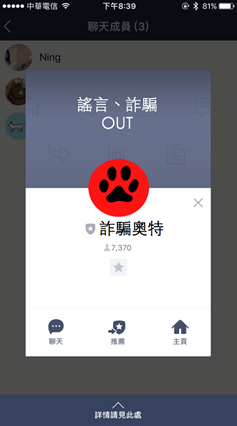

Open Data創新應用競賽
產品或服務構想書(一般民眾/新創企業)
|
參賽編號 |
OD-86580081 |
||||||||||
|
產品或服務名稱 |
詐騙奧特 |
||||||||||
|
市場(使用)族群 |
LINE使用者 #擔心謠言、害怕詐騙 #擔心朋友受謠言所苦、害怕家人被詐騙 |
||||||||||
|
產品或服務簡介 |
詐騙奧特是一個終結謠言、詐騙及不實資訊的LINE機器人。其判斷謠言的資料來自於政府open data平台的165反詐騙諮詢專線－詐騙闢謠專區API，資料經過機器學習演算法訓練後可產出判斷模型。 使用者可將『詐騙奧特』加為好友或拉進群組，經過詐騙奧特的判斷，一旦有任何疑似詐騙或謠言的訊息出現，詐騙奧特會將相關的政府回應或新聞，即時回覆在該群組內，有效降低民眾被詐騙和謠言散播的機率。 詐騙奧特也會反向蒐集聊天室內的可疑訊息，將資料餵給資料庫持續做機器學習。一方面讓資料混搭提升預測精準，再一方面可將資料回饋給政府或民間使用。 |
||||||||||
|
資料來源 (請詳列) |
資料集提供機關名稱 |
資料集名稱 |
資料集連結 |
||||||||
|
政府資料開放平台 |
165反詐騙諮詢專線－詐騙闢謠專區 |
http://data.gov.tw/node/38262 |
|||||||||
|
產品或服務說明 |
壹、緣起與創作目的 近年來隨著科技發展，假新聞、詐騙訊息不斷的推陳出新，藉由網路和通訊軟體散播，擴及範圍無遠弗屆。由於部分民眾較缺乏查證的能力，又基於關心親朋好友，將不實訊息大量轉發，不僅自己上當受騙，還成為謠言散佈者。 通訊軟體Line與台灣人的生活息息相關，根據尼爾森媒體調查，九成台灣民眾使用Line。我們小組觀察到，Line維繫了親朋好友之間的關係，卻也成為謠言散播、不肖人士詐騙的溫床。 因此，如何有效且準確的終結在Line上散播的不實謠言，保護自己同時保護最親近的人遠離詐騙，我們計畫利用Line公司提供的Line聊天機器人API，加上政府open data平台上 “165反詐騙諮詢專線－詐騙闢謠專區API” 所提供的資料，用機器學習演算法訓練資料做出判斷模型，創造『詐騙奧特（諧音：out）』機器人。 使用者可將『詐騙奧特』加為好友或拉進群組，經過詐騙奧特的判斷，一旦有任何疑似詐騙或謠言的訊息出現，詐騙奧特會將相關的政府回應或新聞，即時回覆在該群組內，有效降低民眾被詐騙和謠言散播的機率。
貳、市場調查與產品或服務定位 l STP 分析 市場區隔『Segment』(一) - 警政署「165防騙宣導」官方Line帳號 目前市場上僅有警政署「165防騙宣導」官方Line帳號，定期提供最新訊息，幫助民眾掌握新型詐騙手法及防範之道，並提升反詐騙意識以防遭詐，但該帳號為單方傳訊 [如下圖]，意即該帳號僅能單方面發布訊息，無法判讀使用者的訊息給予回應。 然而，被騙的人通常處於資訊弱勢的一方，較沒有主動查證訊息的認知及能力，因此單方傳訊的防範效果有限。
本服務提供與民眾雙向溝通的服務，讓使用者能即時驗證資料的真假，以達到消除詐騙、闢謠目的。 市場區隔『Segment』(二) - Whoscall Whoscall 是以反電話詐騙為主軸的服務，該服務透過電話黃頁資料庫，協助使用者辨識不明來電。2016年，刑事警察局和Whoscall合作，警政署提供認可過的詐騙集團電話，以及其他號碼辨識技術，如：疑似變造號碼，增強Whoscall的詐騙警示功能。 本服務不僅提供反文字詐騙的服務、還提供闢謠的服務。初期使用政府165資料，未來會建置第三方查證平台，發展社群也提供民眾檢舉功能，增加資料數量。
目標市場『Target Market』 根據尼爾森媒體（Nielsen）調查指出，近91％台灣民眾，將近1700萬人都在用Line，其中40歲以上的中年與銀髮族在比例上都超過9成，與其他社群平台相比較為少見，造成Line平台變成謠言散播者、詐騙集團下手的目標。 詐騙奧特在Line平台上是一個獨立帳號，主要的目標對象為： 一、Line群組內較有查證事實能力的成員 在群組中，難免會有出於好意的謠言散播者，也會有喜歡查證事實者。事實查證者可將詐騙奧特拉入群組，詐騙奧特像是公正第三方的角色，不但減輕事實查證的負擔，更免去糾正別人的尷尬。 二、群組內其他成員 詐騙奧特被加入群組後，該群組成員即成為我們未來廣告或反向蒐集可疑訊息的目標對象。
產品定位『Position』及商業模式 一、短程定位在寓教於樂、雙向互動的闢謠機器人 商業模式：販賣原創貼圖、幫其他貼圖原創者曝光貼圖，收取廣告費用。 每一則澄清訊息都會搭配貼圖一起發出，提升使用者好感，達到寓教於樂之效果。其貼圖來源可以是詐騙奧特原創貼圖，也可以來自其他貼圖原創者，未來可向貼圖原創者收取廣告費用。 二、中、長程定位在第三方查證平台，大數據分析服務 商業模式：B2B, B2G謠言資料庫API 、平台廣告收益 開放詐騙奧特的謠言、詐騙資料庫API，B2B 或B2G 收費，B2C則免費。此外，每一則澄清訊息，礙於字數限制（字數太多可能造成使用者反感），因此澄清訊息都會搭配平台連結，對該澄清訊息有高度興趣的使用者可點連結進一步了解，為平台帶入流量，成為廣告通路之一。 大數據分析服務可分析使用者行為，找出最廣為流傳的新聞、詐騙或謠言，了解國人關切的議題，也可針對最迫切的議題提出解決方案。
l SWOT 分析
參、使用對象 每一位擁有LINE帳號的用戶。 「不再被謠言所惑、不再被歹徒所騙」是本服務的宗旨，隨著通訊軟體日益發達，詐騙事件已從傳統的電話詐騙轉到網路詐騙、甚至是社群平台詐騙，在謠言滿天飛的數位時代裡，分辨什麼是真什麼是假，實在有些困難度又耗時，希望透過本服務的推廣能大幅降低身邊親朋好友受騙的機率。
肆、產品或服務特色說明 現今通訊軟體流行於全台灣，消息傳播快速，許多民眾會將所收到的消息在未經確認其真實的情況下傳給好友或是群組，進而促使有心人士或詐騙集團捏造假消息、詐騙消息傳播，使得民眾上當。為了保護民眾遠離詐騙，本產品提供一個方便的闢謠、反詐騙諮詢的管道，其服務特色如下：
一、結合時下流行的Line通訊軟體 在現今大多數人都有使用Line的情形下，選用Line作為我們服務的平台，便可廣泛地且快速地將我們的服務推廣到每位民眾，以此協助政府對症下藥並幫助民眾防患未然。
二、利用機器學習技術找出訊息的文字模式，預測可疑訊息 新技術的應用層面，除了比對既有資料庫外，本服務使用機器學習演算法、資料探勘等技術，找出謠言、詐騙的文字模式。 以判別電話號碼來說，撇除國碼、區碼等保留號碼之外，電話號碼由亂數組成，無法預測什麼號碼組合是詐騙。但是文字本身有含義、詞性。因此本服務除了抓出既存在資料庫的謠言之外，未來可反向蒐集”可能是謠言、詐騙”的訊息，經由我們主動查證後，再將資料回饋給政府或民間。
三、提供雙向(互動)即時溝通的服務 透過Line聊天機器人向民眾提供雙向(互動)即時溝通的服務，只要將此聊天機器人加入好友或是群組，它能自動判斷每則聊天訊息內容。若某則訊息被判別可能為謠言或詐騙，便會主動出面澄清或提供相關資訊。而民眾也能將自行證實為假的資訊直接透過聊天室回饋。聊天機器人也能提供最新的詐騙資訊，不讓民眾處在資訊被動的一方。 伍、產品或服務功能 一、自動判讀每則聊天訊息，若某則訊息可能為謠言或詐騙，便會主動回覆警告標語或提供相關資訊。 二、透過聊天室提供民眾舉報謠言或詐騙的窗口。 三、未來建置網路平台，平台上可顯示傳閱頻率最高或是最新的真/假消息。 四、可透過輸入關鍵字設定詐騙奧特的各項功能，例如開啟/關閉服務、警告標語個人化。
陸、未來規劃 建置第三方查核網路平台，蒐集更大量的資料給機器學習演算法做更精準的預測。在平台上，我們會陸續釋出我們偵測到的相關數據整理，比如最近流行什麼樣的詐騙手法，主動提供給新聞媒體業者，讓他們報導相關手法，達到主動出擊的效果，讓民眾不再永遠處於弱勢; 亦或是使用大數據分析，整理出相關數據主動公布在我們的網路平台上，讓民眾了解，最近有什麼樣的謠言傳播的非常快速，並提供相關的證據，以證實該訊息為不實謠言，達到教育民眾的效果。 詐騙奧特的服務及未來的平台建置，可以蒐集到更多資料。本服務將主動查證，建立自己的詐騙、謠言資料庫，再將資料回饋給政府或民間使用。
|
||||||||||
|
產品或服務 雛型設計圖 |
詐騙奧特的LINE獨立帳號

邀請詐騙奧特加入群組
若偵測到可疑訊息 關鍵字：迷魂香名片 詐騙奧特會出面澄清
|
||||||||||


文件上傳截圖：